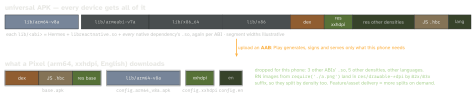

react-native · folio
In one line: Users download a per-device slice: from an AAB, Play builds
split APKs (base + one ABI + one density + the device’s
languages); the App Store thins iOS uploads. In RN the heavy part is native
libraries × ABIs (Hermes, libreactnative.so, every native dependency), then
assets. Measure download size.
Download PDF Print view LaTeX source


The levers — only wins a primary source states are quantified
| lever | what it removes / how | stated win |
|---|---|---|
| AAB (required for new apps, Aug 2021) | other ABIs, densities, languages — from the download | per device |
R8 minify + shrinkResources | unreachable bytecode + unused resources; short names | — |
| Hermes (default engine) | Android: no JSC library to ship (RN docs: “smaller app size”) | — |
RN 0.76 merged libreactnative.so | code duplicated across many .so files | ∼3.8 MB (∼20%) |
| RN 0.84 on iOS | legacy-architecture code no longer compiled in | “reduces app size” |
| remove unused native dependencies | their .so/pods — autolinking links every native package | — |
| WebP images, vector drawables | image bytes; one XML instead of a PNG per density | — |
resourceConfigurations | translations bundled by libraries that you do not ship | — |
How it works
- ABIs: the template builds
armeabi-v7a, arm64-v8a, x86, x86_64(reactNativeArchitectures). With an AAB that costs upload size only. Outside Play (per-CPU APKs,splits { abi }) each APK needs its own versionCode — e.g.versionCode * 1000 + abiCode, arm64 higher so 64-bit devices prefer it. - R8 (
enableProguardInReleaseBuildsin the RN template, off by default): tree-shakes, inlines, merges classes, obfuscates; full mode is default since AGP 8.0.shrinkResourcesonly works with minify on. - Native libs packaging: uncompressed, page-aligned
.so(useLegacyPackaging = false) are mmap’d in place — no extraction, smaller install/updates; compressed libs are extracted at install (bigger on disk). - JS: mostly dependencies — prune with a bundle visualizer.
- iOS: slicing + asset catalogs + ODR (see app-size-and-energy). JSC is a system framework there, so Hermes adds its engine to an iOS app. RN’s
require()d images are copied as loose files, not an asset catalog, so they are not sliced(unverified).
Example — Android release config
// android/app/build.gradle
def enableProguardInReleaseBuilds = true
android {
defaultConfig { resourceConfigurations += ["en", "de"] }
buildTypes { release {
minifyEnabled enableProguardInReleaseBuilds
shrinkResources true // needs minify
proguardFiles getDefaultProguardFile(
"proguard-android-optimize.txt"), "proguard-rules.pro"
} }
}
// react-native.config.js: stop autolinking a lib on Android
// dependencies: { 'some-lib': { platforms: { android: null } } }Measure — the number users see
bundletool build-apks --bundle=app.aab --output=app.apks, thenbundletool get-size total --apks=app.apks(per-config download sizes;--device-specfor one phone).- Android Studio APK Analyzer (Build → Analyze APK): per-folder raw vs download size, dex references,
.soalignment. - Play Console app bundle explorer: size per device configuration.
- iOS: App Thinning Size Report. CI: fail past a size budget.
Traps
- Dropping
x86/x86_64“to shrink” an AAB — Play already serves one ABI; you only broke emulators and x86 devices. - Quoting the universal APK or the upload size — users get the split.
- R8 full mode removes classes reached only by reflection/JNI → release-only
ClassNotFoundException; add keep rules, test release. - Stripping native symbols with nowhere to keep them — upload them (
debugSymbolLevel) or crashes become unreadable.